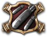
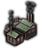
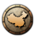
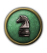

阵营
原页面：Faction
阵营是彼此结盟的民族国家所组成的联合体。
规则
只有在相应国家规则启用时，一个国家才能组建新阵营。游戏开始时，现有的四个阵营领袖——德国、 英国和苏联
英国和苏联 ，以及美国——拥有该规则。其他国家通过各自的国策树获得组建本国阵营的能力。加入阵营同样受国家规则限制。视意识形态和国家精神而定，国家在加入阵营或邀请他人加入阵营之前需要达到不同的世界紧张度。
，以及美国——拥有该规则。其他国家通过各自的国策树获得组建本国阵营的能力。加入阵营同样受国家规则限制。视意识形态和国家精神而定，国家在加入阵营或邀请他人加入阵营之前需要达到不同的世界紧张度。

阵营成员彼此共享军事通行权，并能在外交界面看到盟友的准确情报。
阵营规则可以修正某些国家规则，例如对一个同意识形态国家正名战争目标的能力，或者和平会议中允许执行哪些行动。
阵营成员可以选择退出阵营，但这会造成显著的关系修正faction traitor（-75 关系）。阵营成员在与其他成员一同作战期间不能退出。阵营领袖即使处于战争状态也可以把另一个国家踢出阵营，或者在该阵营除自己和自己的附属国外再无其他成员时完全解散它。如果阵营领袖不复存在，则由剩余成员中最大的一个接管。
如果一个国家与主要盟友并肩作战，那么只有当该阵营中所有主要国家都已投降后，它才会投降。例如，如果 波兰加入了同盟国，那么在英国和法国
波兰加入了同盟国，那么在英国和法国 投降之前它不会投降，而是会继续作为流亡政府存在。反过来说，这也意味着：即使某国成功击退了德国，只要德国设法使法国和英国投降，它仍将被迫投降。
投降之前它不会投降，而是会继续作为流亡政府存在。反过来说，这也意味着：即使某国成功击退了德国，只要德国设法使法国和英国投降，它仍将被迫投降。
阵营力量投射
阵营的力量投射数值取决于以下因素：
- 成员的工业实力
- 成员的陆军实力
- 成员的海军实力
- 成员的空军实力
- 已完成的阵营目标
阵营会根据其力量投射被纳入一个全球排名。阵营排名用于决定以下几件事：
- 各国加入该阵营的可能性
- 和平协议中的破局规则
可组建阵营
以下国家可以获得允许其组建阵营的国家规则。请记住，尽管大多数国家都能通过自己的国策树组建阵营，但并不是所有国家都能由此普遍获得组建阵营的国家规则。
 阿富汗
阿富汗
 统一伊斯兰世界
统一伊斯兰世界 在亚洲支援苏联
在亚洲支援苏联 追求我们自己的议程
追求我们自己的议程
 阿根廷
阿根廷
 阿根廷优先
阿根廷优先 和平堡垒
和平堡垒
 澳大利亚
澳大利亚
 西南太平洋倡议
西南太平洋倡议 与日本达成协议
与日本达成协议- 我们自己的帝国
 加入共产国际
加入共产国际 工人乐园
工人乐园
 奥地利
奥地利
- 拥有通用国策树的国家
 我们为何而战
我们为何而战 意识形态狂热
意识形态狂热
 比属刚果
比属刚果
- 非洲联盟
- congo_independence_struggle.3
- congo_independence_struggle.5
 比利时
比利时
 力量与兄弟情谊
力量与兄弟情谊
 巴西
巴西
 组建南方共同市场
组建南方共同市场 拉丁美洲社会主义合作社
拉丁美洲社会主义合作社 与邻国接触
与邻国接触
 英属印度
英属印度
 为同盟国效力
为同盟国效力- 印度社会主义
 保加利亚
保加利亚
 把革命推向海外
把革命推向海外 巴尔干社会主义共和国联邦
巴尔干社会主义共和国联邦- 巴尔干邦联
- 保加利亚第三帝国
 加拿大自治领
加拿大自治领
 北美联盟
北美联盟 刺穿雄鹰
刺穿雄鹰
一号防御方案（作为法西斯 时）
时）- 加拿大联合
 智利
智利
 美洲原住民联盟
美洲原住民联盟 支持国际革命
支持国际革命
 中国:
中国:
- SEA_china.12
- wtt_xian_incident.5
- wtt_xian_incident.10
- 不带

 统一战线
统一战线
- 带有
- 改变力量平衡
 永恒革命
永恒革命
 中华苏维埃共和国:
中华苏维埃共和国:
- SEA_PRC_faction_events.10
- SEA_PRC_faction_events.11
- SEA_PRC_faction_events.40
- wtt_prc.1
- wtt_warlord_vs_prc.10
- 不带
 有中国特色的马克思主义
有中国特色的马克思主义- 国防政府（如果国民党中国未独立）
 对抗军阀（且不在任何阵营中）
对抗军阀（且不在任何阵营中）
- 带有
 烧掉纸老虎
烧掉纸老虎 为不可避免之事作准备
为不可避免之事作准备- 要求军阀效忠
- 除
 和田马家军之外的所有马家军，前提是它已完成破坏国民党统治
和田马家军之外的所有马家军，前提是它已完成破坏国民党统治  正式化马家军集团
正式化马家军集团


- 所有中国军阀
- 开辟自己的道路
- 国防政府（如果国民党中国未独立）
- 对抗军阀（且不在任何阵营中）
 加入中华苏维埃（且不在任何阵营中）
加入中华苏维埃（且不在任何阵营中） 宣称天命
宣称天命
 捷克斯洛伐克
捷克斯洛伐克
 丹麦
丹麦
 丹麦优先
丹麦优先- denmark_protection_event.100
- denmark_protection_event.101
- denmark_expansion_event.400
- denmark_fascist_event.3
 爱沙尼亚
爱沙尼亚
 芬兰-爱沙尼亚至上联盟（且不在任何阵营中）
芬兰-爱沙尼亚至上联盟（且不在任何阵营中）
 埃塞俄比亚
埃塞俄比亚
 迈向非洲统一
迈向非洲统一
 法国
法国
 德国
德国 - germany.41.b
- 带有

 胜利的意志
胜利的意志 点燃革命之火
点燃革命之火
- 不带
- 同盟国
 希腊
希腊
 骰子已经掷下！
骰子已经掷下！- 与铁托结盟
- 南方革命者
 动用军队
动用军队 与同盟国重新结盟
与同盟国重新结盟 塑造新世界秩序
塑造新世界秩序
 匈牙利王国
匈牙利王国 - 带有
 哈布斯堡同盟
哈布斯堡同盟 寻求与皇帝结盟
寻求与皇帝结盟- 高高在上
- 巴尔干协约
- 与意大利结盟
 多瑙河联邦
多瑙河联邦 恢复社会主义联邦共和国
恢复社会主义联邦共和国
- 不带
- 邀请哈布斯堡王子
 巴尔干协约
巴尔干协约 与意大利结盟
与意大利结盟- 革命委员会
- DOD_hungary.23
- DOD_hungary.27
- DOD_hungary.43
- 带有
 冰岛
冰岛
 拥抱工人革命
拥抱工人革命
 伊朗
伊朗
 伊斯兰兄弟会
伊斯兰兄弟会 在中东建立保护国
在中东建立保护国- 伊朗优先
- 伊朗社会主义
 与苏联结盟（如果苏联不是阵营领袖但可以加入阵营）
与苏联结盟（如果苏联不是阵营领袖但可以加入阵营）
 伊拉克
伊拉克
 组建石油输出国组织
组建石油输出国组织 支援盟军战争努力
支援盟军战争努力 组建阿拉伯联盟
组建阿拉伯联盟 反西方联盟
反西方联盟
 意大利
意大利
 我们的海
我们的海- 教宗复兴
 意大利优先
意大利优先- italy.8
 日本
日本
- SEA_japan_foreign_policy.42
- SEA_japan_foreign_policy.43
- 使用
 与共产国际抗衡
与共产国际抗衡 引导小国
引导小国 西太平洋条约组织
西太平洋条约组织 重燃旧日同盟
重燃旧日同盟 回归锁国论
回归锁国论 日本-中国-满洲国同盟
日本-中国-满洲国同盟 东亚新秩序
东亚新秩序 大东亚共荣圈
大东亚共荣圈
- 没有
- 加入共产国际
 西太平洋条约组织
西太平洋条约组织- 重燃旧日同盟
 拉脱维亚
拉脱维亚
- 圣化兄弟会
 立陶宛
立陶宛
- 带有

- LIT_events.6
- LIT_events.601
- 带有
 满洲国
满洲国
- 使用
- 与苏维埃共和国结盟
- 带有或不带
 收复帝国
收复帝国
- 使用
 墨西哥
墨西哥
- 西班牙裔联盟
 现实政治
现实政治- 玻利瓦尔联盟
 荷兰
荷兰
- 荷兰优先
- 真正共产主义的堡垒
 组建比荷卢
组建比荷卢
 新西兰
新西兰
- 统治一切
 独立的新西兰
独立的新西兰
 挪威
挪威
 主动防御
主动防御
 波兰
波兰
- 波罗的海联盟
 莫尔日协定
莫尔日协定- 两海之间构想
- 长枪党国际
- NSB_poland_events.301
- NSB_poland_events.303
 葡萄牙
葡萄牙
 人民阵线集团
人民阵线集团- 保卫自由世界
- 第五帝国
- 王国重归统一
 罗马尼亚
罗马尼亚
- 防疫封锁线
- 巴尔干霸权
- DOD_romania.52.a
 南非
南非
 南非优先
南非优先- 非洲人民联盟
 苏联
苏联
- 工人政府万岁
 西班牙
西班牙
- 拉丁集团
 瑞典
瑞典
 集权化的北欧陆军司令部
集权化的北欧陆军司令部 分权化的北欧陆军司令部
分权化的北欧陆军司令部 瑞典-芬兰防御协定
瑞典-芬兰防御协定
 土耳其
土耳其
- 重新加入同盟国
 提出奥匈声索
提出奥匈声索- 地中海协约
 反布尔什维克地中海集团
反布尔什维克地中海集团 国民公约
国民公约 改革巴尔干协约
改革巴尔干协约
 美国
美国
- 战争权力法
 南斯拉夫
南斯拉夫
 泛斯拉夫工人大会
泛斯拉夫工人大会- 南斯拉夫防御联盟
可加入阵营
大多数国家默认都能加入阵营，但并非所有国家都如此。除了某些国家单纯缺少允许其加入阵营的游戏规则外，在多数情况下，已经身为阵营领袖的国家也不能加入其他阵营。不过，某些阵营拥有“can_leader_join_other_factions = yes”这条规则。此类阵营的领袖可以加入其他阵营（当然前提是满足其想加入阵营的其他条件）。如果某阵营领袖这样做，那么他本人及其所有附属国都会加入新阵营，而其原有阵营将被完全解散。
以下是因游戏规则而无法加入阵营的国家列表：
默认：
在特定条件下：
- 阿根廷
- 阿根廷优先
- 和平堡垒
- 保加利亚
 巴尔干的命运
巴尔干的命运
 加拿大
加拿大 - 内省共产主义
- 智利
- 美洲原住民联盟
 遵循长枪党模式
遵循长枪党模式
 匈牙利
匈牙利
- 高高在上
 巴拉圭
巴拉圭
 接受美国贷款
接受美国贷款- 在获得国家精神“美国投资”时
- 巴拉圭,
 乌拉圭
乌拉圭
 第二次美洲殖民化
第二次美洲殖民化
- 伊朗
- 在中东建立保护国
- 在获得国家精神“被突袭震惊”时
- 在通过事件向英国投降时

- 在通过事件投降时
- 葡萄牙
- 第五帝国
- 来自“葡萄牙无政府主义”事件
- 英属印度可释放国家
- 在生成时
- 苏联
- upon the start of a civil war
- 任何苏联分离出来的国家
- 在挣脱时
- 英属印度
- 在获得国家精神“蓬勃工业”时
- 英属印度、巴基斯坦、孟加拉国以及所有可从印度释放的国家
- 在印度挣脱时


- 任何因埃塞俄比亚煽动动乱而挣脱独立的民族
- 在挣脱时
 鲁塞尼亚
鲁塞尼亚 - 在获得“背山一战”国家精神时
 秘鲁
秘鲁
- 在获得国家精神“亚马逊战争”时
 新疆
新疆
- 在获得国家精神“新疆之战”时
- 埃塞俄比亚
- 在获得国家精神“靠自己”时
 芬兰
芬兰
- 在获得国家精神“独狼”时
- 丹麦
- 在通过事件投降时
- 法国
- 在转变为
 维希法国时
维希法国时
- 在转变为
 无政府主义西班牙
无政府主义西班牙 - 在挣脱时
以下是各国重新获得加入阵营这一游戏规则的方式列表：
- 中华苏维埃共和国 通过：
- 烧掉纸老虎
- SEA_PRC_faction_events.10
- SEA_PRC_faction_events.11
- wtt_xian_incident.5
- wtt_xian_incident.10
- 游玩 1939 年开局
- 丹麦 通过：
 为战争出力
为战争出力- becoming independent
- becoming the subject of a different nation
- being released
- 宣布独立战争
- 加入宗主国的阵营
- 宣誓效忠
- 英属印度 通过：
- 为同盟国效力
- 我是死神
 造王者
造王者- 在“蓬勃工业”国家精神被移除时
- GOE_RAJ.35
- 巴拉圭 通过：
- 加入同盟国
 紧急权力
紧急权力- 失去国家精神“美国投资”
- 苏联
- 社会主义堡垒
 国际革命马克思主义
国际革命马克思主义 重新召集缙绅会议
重新召集缙绅会议
- 维希法国 通过：
- 结束占领
- 处于战争状态
- 法国 通过：
- 加入轴心国（AI 决策）
- 英属印度、巴基斯坦、孟加拉以及所有可从英属印度释放的国家：
- 通过“印度分治”超时
- 捷克斯洛伐克
- 中欧阵营理念（国家精神）
- 鲁塞尼亚
- 因失去“背山一战”国家精神
- 秘鲁
- 在失去国家精神“亚马逊战争”时
- 新疆
- 在失去国家精神“新疆之战”时
- 游玩 1939 年开局
- 伊朗
- 在失去国家精神“被突袭震惊”时
- 葡萄牙
- 在移除葡萄牙无政府主义时
- 苏联分离出来的国家：
- 在处于和平状态时
- 乌拉圭
 Anti-Imperialism
Anti-Imperialism
阵营领袖
阵营领袖是阵营的领袖。游戏中的默认阵营领袖是： 英国领导同盟国、德意志国
英国领导同盟国、德意志国 领导轴心国、苏联领导
领导轴心国、苏联领导 共产国际，以及美国领导美洲联邦
共产国际，以及美国领导美洲联邦 。通常还会有日本领导东亚新秩序，以及
。通常还会有日本领导东亚新秩序，以及 中国领导中国统一战线加入它们。
中国领导中国统一战线加入它们。
如果阵营领袖不复存在，则由剩余成员中最大的一个接管。
外交行动
阵营领袖即使处于战争状态也可以把另一个国家踢出阵营，或者在该阵营除自己和自己的附属国外再无其他成员时完全解散它。
接任领袖
要想接管自己所在的阵营，一个国家必须满足该阵营规则所设定的条件。如果没有制定任何“领导权变更”规则，那么任何国家都可以随时接管领导权。
支付 200 点 政治点数后，该国即可成为阵营领袖，并享有随之而来的全部好处。
政治点数后，该国即可成为阵营领袖，并享有随之而来的全部好处。
此事发生后 180 天内，其他国家不能声索领导权
阵营主动权、纲领与目标
主动性
阵营的每个成员都拥有自己的阵营主动权池，可以随意支配。成员通过两种方式产生阵营主动权：被动地来自纲领完成度，主动地来自达成阵营目标。
被动产生的主动权按各成员的影响力在成员之间分配。
阵营主动权可以通过多种方式花费，用来改变或强化阵营。
阵营纲领
每个阵营都有一份纲领，本质上就是它们试图达成的宏大蓝图。
每份纲领都会根据完成度为阵营成员提供按比例递增的收益，如果完成度至少达到 75%，还会额外提供一组加成。
| Manifest | used by | 进度来源 | 宣言进展 （按比例缩放） |
宣言已实现 （进度 75 至 100% 时） |
|---|---|---|---|---|
| 捍卫民主 | 美洲联邦 防御性民主阵营 （通用） 旧同盟 西太平洋条约组织 西南太平洋倡议 阿尔卑斯联邦 比荷卢联盟 Benelux 莫尔日协定 |
独立的、未投降的 占总量（40） |
贸易协定关系修正 +20.00% | 可保障其他意识形态：是 保障独立带来的外国民主支持度增长：+0.05 |
| 捍卫民主 （同盟国） | 同盟国 NATO 国家共同体 三国协约 自由联邦国家联盟 英联邦 |
独立的、未投降的 占总量（50） |
贸易协定好感度系数 +20.00% 保障独立花费 -50% |
可保障其他意识形态：是 保障独立带来的外国民主支持度增长：+0.08 |
| 遏制世界共产主义 | 自由联盟 （通用） 英意协定 日本圈 正统派同盟 印度繁荣圈 长枪党国际 反苏协定 博马协定 |
由非共产主义者控制的州 在所有州中 |
每日共产主义支持度：-0.08 |
制造战争目标的世界紧张度限制：-15.0% 所需驻军 -15% |
| 镇压法西斯 | 堡垒条约 （通用） 反法西斯集团 比利时—西班牙联盟 太平洋抵抗 |
（大洲）中由非法西斯国家控制的州 在（大洲）的州中 |
每日法西斯支持度：-0.08 |
每周战争支持度（战斗伤亡）：+0.60% |
| 通用扩张主义 | 由阵营控制的、位于首都所在大洲的州 占首都所在大洲全部州的 67% |
党派支持率稳定度修正：+10.00% | 每月人口：+15% 制造战争目标所需世界紧张度上限：-15% | |
| 镇压（大洲）的共产主义 | 抵御红色威胁的屏障 （通用） 皇家帝国同盟 马家军集体 反布尔什维克协定 |
首都位于（大洲）的非共产主义国家 在首都位于（大洲）的国家中 |
每日共产主义支持度：-0.05 |
每周战争支持度（战斗伤亡）：+0.30% |
| 镇压民主 | 铁血盟约 （通用） 柏林—莫斯科轴心 |
（大洲）中由非民主国家控制的州 在（大洲）的州中 |
每日民主制支持度：-0.05 | 每周战争支持度（战斗伤亡）：+0.30% |
| 征服与支配 | 轴心国 | 由阵营占领的外国州 在阵营全部核心州中 |
制造战争目标所需时间：-25.0% 进攻战争惩罚 稳定度修正：+15.00% |
非核心人力：+3.00% 制造战争目标所需世界紧张度上限：-25.0% |
| 世界革命 | 世界革命 （通用） 泛亚革命阵线 亚洲共产主义团结 第四国际 南美国际 多瑙河集团 拉丁美洲社会主义合作社 人民阵线 巴黎协定 无产阶级国际 共产主义苏维埃联盟 联合社会主义阵线 人民阵线集团 革命社会主义团结国际局 英国共产主义替代方案 海湾同盟 北方民族联盟 |
所有 在所有国家中 |
每日共产主义支持度：+0.10 |
可招募人口系数：5% 党派支持率稳定度修正：+10.00% |
| 团结就是力量 | 区域防御条约 （通用） 罗马协定 OPEC 中东条约组织 皇家伊比利亚同盟 北美联盟 欧洲统一 欧洲联盟 欧洲自由国家 意大利邦联 |
阵营成员 占总量（20） |
贸易协定关系修正：+20.00% | 政治点数增益：+10% |
| 和平守护者 | 帝国诸国 亚洲民主协约 |
处于和平状态的国家 out of all countries |
建造速度：+10% | 贸易协定关系修正 +20.00% |
| 非洲主导 | 非洲统一 （通用） | 我方控制的非洲州数 / 非洲全部州数 | 稳定度：+8.00% | 师在核心领土上的防御：+5.0% |
| Pan-Americanism | 美洲国家组织 （通用） 门罗同盟 Mercosul 玻利瓦尔联盟 互惠援助条约 法语国家霸权 西班牙联盟（通用） 西班牙霸权同盟 西班牙联盟 |
由我们控制的南北美洲州 在北美洲和南美洲的全部州中 |
稳定度：+10.00% | 战争支持度：+5.00% 核心领土上的师防御：+10.0% |
| 确立欧洲主导地位 | 欧洲阵线 （通用） 金狮之傲 布拉格议定书 芬兰语族霸权同盟 芬兰霸权同盟 拉丁协约 拉丁集团 法兰西治权 大陆体系 同盟国 Mitteleuropa 中欧联盟 十一月同盟 |
由我们控制的欧洲州 占欧洲全部州的 67% |
稳定度：+10.00% | 战争支持度：+5.00% 核心领土上的师防御：+10.0% |
| 确立亚洲主导地位 | 亚洲阵线 （通用） 亚洲预备阵线 |
由我们控制的亚洲州 占亚洲全部州的 67% |
稳定度：+10.00% | 战争支持度：+5.00% 核心领土上的师防御：+10.0% |
| 控制中东 | 中东协约 （通用） | 由我们控制的中东州 在中东的全部州中 |
稳定度：+10.00% | 战争支持度：+5.00% 核心领土上的师防御：+10.0% |
| 两海之间 | 海间联邦 防疫封锁线 |
由阵营控制的两海之间州 out of between the seas states |
稳定度+10% | 战争支持度：+5% 核心领土上的陆军防御：+10% |
| 执行巴黎和约 | 小协约国 捷克协约 斯特雷萨阵线 法国同盟 |
由德国、匈牙利、奥地利和保加利亚控制的阵营边境州 在 1936 年由德国、匈牙利、奥地利和保加利亚控制的边境州中 |
稳定度+10% | 战争支持度：+5% 核心领土上的陆军防御：+10% |
| 领土完整 | 中国抗日民族统一战线 人民阵线 人民阵线 国防政府 互助集团 |
由中国核心州，且由我方阵营领袖的意识形态控制 在中国全部州中（76 个） |
政治点数获取：+10% 战争支持度：+10.00%
核心领土上的师防御：+10% |
附属国自治度增益：-0.50 |
| 领土完整 （蒋介石） | 中国统一战线 | 由中国核心州，且由我方阵营领袖的意识形态控制 在中国全部州中（76 个） |
政治点数获取：+10% 战争支持度：+10.00%
核心领土上的师防御：+20% |
附属国自治度增长：-0.50 来自战争贡献的自治度获取：-10% |
| 中国整合 | 南京阵线 中国统一战线 |
由中国核心州，且由我方阵营领袖的意识形态控制 在中国全部州中（76 个） |
附属国自治度增长系数：-30%
核心领土上的师防御：+10% |
向宗主国提供的民用工厂：+50% 向宗主国提供的军用工厂：+50% |
| 战胜帝国主义 | 南京阵线 | 由阵营及核心持有者控制的亚洲州 在亚洲全部州中 |
附属国自治度增益系数：-30% | 向宗主国提供的民用工厂：+50% 向宗主国提供的军用工厂：+50% |
| 战胜帝国主义 （已升级） | 南京阵线 | 由阵营及核心持有者控制的亚洲和大洋洲州 在亚洲与大洋洲的全部州中 |
附属国自治度增长系数：-30% 向宗主国提供的民用工厂：+50% 向宗主国提供的军用工厂：+50% |
战争支持度系数：+10% |
| 战胜帝国主义（中华人民共和国） | 亚洲民主联盟 | 由阵营及核心持有者控制的亚洲和大洋洲州 在亚洲与大洋洲的全部州中 |
稳定度+10% | 战争支持度：+5% 核心领土上的陆军防御：+10% |
| 镇压亚洲共产主义 | 东亚新秩序 中日反共协定 |
首都位于亚洲的非共产主义国家数 / 首都位于亚洲的国家总数。 | 每日共产主义支持度 -0.05 | 政治点数获取：+10.00% |
| 战略资源控制 | 大东亚共荣圈 工业宪章（通用） 西太平洋圈 大东亚共荣圈 中立协约 比利时联邦 |
阵营成员开采的资源总量 占全球开采资源总量的比例（最高 30%） |
工厂产出：+10.00% 船坞产出：+10.00% |
建造速度：+10.00% |
| 巴尔干安全 | 多瑙河联邦 大保加利亚联邦 巴尔干协定 巴尔干协约 布加勒斯特协定 巴尔干邦联同盟 巴尔干社会主义共和国联邦 科孚合作社 泛斯拉夫工人大会 巴尔干防务同盟 |
由阵营控制的巴尔干州 在巴尔干各州中 |
稳定度+10% | 战争支持度：+5% 核心领土上的陆军防御：+10% |
| 非洲非殖民化 | 非洲联盟 非洲人民联盟 |
不由殖民国家控制的非洲州 在非洲全部州中 |
政治点数增益 +15% | 战争支持度：+10% |
| 哈布斯堡霸权 | 哈布斯堡联盟 哈布斯堡协定 |
国家拥有哈布斯堡统治者 在所有可能拥有哈布斯堡统治者的国家中 |
稳定度+15% | 战争支持度：+10% 核心领土上的陆军防御：+10% |
| 解放美洲 | 美洲原住民联盟 | 由阵营控制的美洲州 在美洲各州中 |
战争支持度 +15% 可招募人口系数：+15% |
陆军在核心领土上的攻击：+10% 核心领土上的陆军防御：+10% |
| 伊斯兰兄弟会 | 伊斯兰团结党 土耳其—波斯联盟 阿拉伯联盟 萨达巴德协约 伊斯兰兄弟会 |
伊斯兰阵营成员 在所有潜在的伊斯兰国家中 |
政治点数获取 +10% 核心领土上的陆军防御：+10% |
陆军在核心领土上的攻击：+10% |
| 波罗的海安全 | 波罗的联盟 联邦同盟 波罗的海协约 波罗的海兄弟会 |
由阵营控制的波罗的州 在波罗的海各州中 |
对主要国家的攻击：+15% 对主要国家的突破：+15% 对主要国家的防御：+15% |
顺从度增长：+10% |
| 北欧防御 | 北方民族阵线 北方同盟 北欧合作联盟 北方安全条约 北方防线 北欧理事会 瑞典-芬兰防御协定 斯堪的纳维亚防务联盟 北欧防务委员会 |
由阵营控制的北欧州 在北欧各州中 |
对主要国家的攻击：+15% 对主要国家的突破：+15% 对主要国家的防御：+15% |
顺从度增长：+10% |
| 我们的海 | 意大利同盟 天主教自治领 地中海公约 生存空间 |
由阵营控制的地中海州 在地中海各州中 |
战争支持度+15% | 师在核心领土上的攻击：+10% 核心领土上的师防御：+10% |
| 罗马和平 | 新罗马帝国 罗马帝国 |
由阵营控制的昔日罗马州 在原罗马各州中 |
战争支持度+15% | 顺从度增长速度：+10% |
| 以扩张求安全 | 共产国际 第五共产国际 新国际 国际革命马克思主义中心 |
由我们控制的初始边境州 在开局时与我国接壤的州中（41 个） |
战争惩罚稳定度修正：+10.00% | 制造战争目标的世界紧张度限制 -15.0% 可保障其他意识形态：是 保障独立带来的外国共产主义支持度增长：+0.10 |
| 铁幕 | 华沙条约组织 | 同大洲的 在同一大洲的所有国家中 |
向宗主国提供的民用工业：+15.00% 向宗主国提供的军事工业：+15.00% 附属国自治度增益：-0.50 向宗主国提供的资源：+15.00% |
制造战争目标的世界紧张度限制 -15.0% 可保障其他意识形态：是 保障独立带来的外国共产主义支持度增长：+0.12 |
阵营目标
每个阵营都可以分别设定一个短期、中期和长期目标。某些阵营可以获得同时激活同一期限内多个目标的能力。完成目标通常会给予该阵营一个主动权点数，有时还会有额外奖励。
短期目标
| 名称 | Conditions | Goal | Reward |
|---|---|---|---|
| 统一德意志诸邦 | 是德国 将在以下情况下取消：
|
|
阵营获得：
阵营领袖获得：
|
| 扩建关岛海军基地 | 是美国 将在以下情况下取消：
|
|
阵营获得：
阵营领袖获得：
|
| 组织抵抗 | 是 处于战争状态 |
已建立超过 4 个游击队小组 |
阵营获得：
阵营领袖获得：
任何已建立超过 2 个游击队小组的阵营成员获得：
|
| 征服北方 |
|
控制以下国家的全部核心州： |
阵营获得：
任何身为附属国的阵营成员获得：
|
| 发展联合研究实践 |
|
阵营自选定该目标以来已研究若干新科技。目标数量是一个百分比，取决于选定该目标时阵营已研究的科技数量
|
阵营获得：
完成者获得：
|
| 建立联合指挥架构 |
|
自选定此目标以来，阵营在战场上的师增加了 20% |
阵营获得：
完成者获得：
|
| 征服西方 |
|
控制以下国家的全部核心州： |
阵营获得：
任何身为附属国的阵营成员获得：
|
| 征服南方 |
|
控制以下国家的全部核心州： |
阵营获得：
任何身为附属国的阵营成员获得：
|
| 控制海岸 |
|
在以下地区拥有海军优势：
|
阵营获得：
任何阵营成员获得：
完成者获得：
|
| 达成生产配额 |
|
阵营拥有超过：
于库存中。 |
阵营获得：
每个阵营影响力超过 30% 的阵营成员获得：
阵营领袖获得：
|
| 阻止法西斯威胁 |
|
以下任一：
|
阵营获得：
每个阵营成员获得：
阵营领袖获得：
|
| 扩张阵营 |
|
以下任一：
|
阵营获得：
阵营领袖获得：
|
| 任命特工大师 |
|
|
阵营获得：
特工首脑获得：
每个尚未建立情报机构的阵营成员：
每个已建立情报机构但尚未完成「组建部门」升级的阵营成员：
每个已建立情报机构并已完成「组建部门」升级的阵营成员：
每个已建立情报机构、机构升级少于 30 项，且要么已解锁「upgrade_crypto_strength_2」要么尚未研究「机械计算机」的阵营成员：
每个已建立情报机构且机构升级超过 30 项的阵营成员：
|
| 运输船队充足度 |
|
阵营获得：
阵营领袖获得：
每个拥有超过 199 艘运输船队的阵营成员获得：
| |
| 建造军事研发设施 |
阵营控制的州不包含以下各项中的至少一种：
|
阵营控制的州包含以下各项中的至少一种：
|
阵营获得：
阵营领袖获得：
每个控制至少 1 座设施（核设施除外）的阵营成员获得：
每位当前活跃的阵营科学家（核科学家除外）获得：
|
| 建造军事基础设施 |
至少 1 个州：
|
少于 10 个州为：
|
阵营获得：
每个阵营成员获得：
|
| 建造更坚固的工事 | 阵营完全控制其全部核心州 |
以下任一：
|
阵营获得：
每个没有国家精神「威慑」的阵营成员获得：
|
| 对法西斯国家发动先发制人的打击 |
|
|
阵营获得：
阵营领袖获得：
每个阵营成员获得：
|
| 对共产主义宣战 |
|
|
阵营获得：
阵营领袖获得：
每个阵营成员获得：
|
| 对民主制宣战 |
|
|
阵营获得：
阵营领袖获得：
每个阵营成员获得：
|
| 扩充我们的装甲力量 |
|
阵营获得：
每个阵营成员获得：
| |
| 扩充我们的步兵力量 |
|
阵营获得：
每个阵营成员获得：
| |
| 开发墨西哥石油 | 480、479、477、476 由某个阵营成员控制 拥有开采 1 和开采 2 |
|
阵营获得：
480, 479, 477, 476:
|
| 开发库拉索石油 | 695 由某个阵营成员控制 拥有开采 1 和开采 2 |
|
阵营获得：
695:
|
| 开发委内瑞拉石油 | 489、307 由某个阵营成员控制 拥有开采 1 和开采 2 |
|
阵营获得：
489, 307:
|
| 开发圭亚那铝土矿 | 687 由某个阵营成员控制 拥有开采 1 和开采 2 |
|
阵营获得：
695:
|
| 开发苏里南铝土矿 | 309 由某个阵营成员控制 拥有开采 1 和开采 2 |
|
阵营获得：
309:
|
| 开发拉普兰金属 | 666、918 由某个阵营成员控制 拥有开采 1 和开采 2 |
|
阵营获得：
666:
918:
|
| 开发普洛耶什蒂油田 | 46 由某个阵营成员控制 拥有开采 1 和开采 2 |
|
阵营获得：
46:
|
| 开发巴库油田 | 229、232、821 由某个阵营成员控制 拥有开采 1 和开采 2 |
|
阵营获得：
232, 821:
229:
|
| 开发伊拉克石油 | 291、676、1010 由某个阵营成员控制 拥有开采 1 和开采 2 |
|
阵营获得：
291:
676:
1010:
|
| 开发波斯石油 | 411、412、413 由某个阵营成员控制 拥有开采 1 和开采 2 |
|
阵营获得：
411:
412:
413:
|
| 开发中国金属 | 592、593、594、599 由某个阵营成员控制 拥有开采 1 和开采 2 |
|
阵营获得：
592:
593, 599:
594:
|
| 开发马来亚富源 | 333、336、1021、1024 由某个阵营成员控制 拥有开采 1 和开采 2 |
|
阵营获得：
333:
336:
1021:
599:
|
| 开发印度尼西亚的富源 | 334、335、667、672、673 由某个阵营成员控制 拥有开采 1 和开采 2 |
|
阵营获得：
334:
335:
667:
672:
673:
|
| 扩建纽芬兰基地 | 331 is controlled by a faction member |
331:
|
阵营获得：
州 331 的控制者获得：
|
| 扩建百慕大基地 | 696 is controlled by a faction member |
696:
|
阵营获得：
州 696 的控制者获得：
|
| 扩建巴哈马基地 | 690、693 由阵营成员控制 |
690 或 693：
|
阵营获得：
州 690 或 693 的控制者获得：
|
| 设防巴拿马运河 | 685 is controlled by a faction member |
685:
|
阵营获得：
州 685 的控制者获得：
685:
|
| 扩建特立尼达基地 | 691 is controlled by a faction member |
691:
|
阵营获得：
州 691 的控制者获得：
|
| 扩建亚速尔基地 | 698 is controlled by a faction member |
698:
|
阵营获得：
州 698 的控制者获得：
|
| 扩建冰岛基地 | 100 is controlled by a faction member |
100:
|
阵营获得：
州 100 的控制者获得：
|
| 扩建法罗群岛基地 | 337 is controlled by a faction member |
337:
|
阵营获得：
州 337 的控制者获得：
|
| 扩建纳尔维克基地 | 114 is controlled by a faction member |
114:
|
阵营获得：
州 114 的控制者获得：
|
| 设防丹麦海峡 | 37、911、99 由阵营成员控制 |
37:
911:
99:
|
阵营获得：
州 37、911、99 的控制者获得：
37:
911:
99:
|
| 设防直布罗陀 | 118 is controlled by a faction member |
118:
|
阵营获得：
州 118 的控制者获得：
118:
|
| 扩建马耳他基地 | 116 is controlled by a faction member |
116:
|
阵营获得：
州 116 的控制者获得：
|
| 扩建克里特基地 | 182 is controlled by a faction member |
182:
|
阵营获得：
州 182 的控制者获得：
|
| 扩建塞浦路斯基地 | 183 is controlled by a faction member |
183:
|
阵营获得：
州 183 的控制者获得：
|
| 设防博斯普鲁斯海峡 | 797 is controlled by a faction member |
797:
|
阵营获得：
州 797 的控制者获得：
797:
|
| 设防达达尼尔海峡 | 340、341 由阵营成员控制 |
340:
341:
797:
|
阵营获得：
州 340、341 的控制者获得：
340:
341:
|
| 设防苏伊士运河 | 446 is controlled by a faction member |
446:
|
阵营获得：
州 446 的控制者获得：
446:
|
| 扩建亚丁湾基地 | 992 is controlled by a faction member |
992:
|
阵营获得：
州 992 的控制者获得：
|
| 设防霍尔木兹海峡 | 412、1013 由阵营成员控制 |
412:
1013:
|
阵营获得：
州 412、1013 的控制者获得：
412:
1013:
|
| 扩建锡兰基地 | 422 is controlled by a faction member |
422:
|
阵营获得：
州 422 的控制者获得：
|
| 扩建新加坡海军基地 | 1021 is controlled by a faction member |
1021:
|
阵营获得：
州 1021 的控制者获得：
1021:
|
| 设防马尼拉湾 | 327 is controlled by a faction member |
327:
|
阵营获得：
州 327 的控制者获得：
327:
|
| 设防冲绳 | 526 is controlled by a faction member |
526:
|
阵营获得：
州 526 的控制者获得：
526:
|
| 设防硫磺岛 | 645 is controlled by a faction member |
645:
|
阵营获得：
州 645 的控制者获得：
645:
|
| 扩建加罗林基地 | 684 is controlled by a faction member |
684:
|
阵营获得：
州 684 的控制者获得：
|
| 扩建瓜达尔卡纳尔基地 | 634 is controlled by a faction member |
634:
|
阵营获得：
州 634 的控制者获得：
|
| 扩建威克岛基地 | 632 is controlled by a faction member |
632:
|
阵营获得：
州 632 的控制者获得：
|
| 扩建中途岛基地 | 631 is controlled by a faction member |
631:
|
阵营获得：
州 631 的控制者获得：
|
中期目标
| 名称 | Conditions | Goal | Reward |
|---|---|---|---|
| 废除凡尔赛条约 | 是德国 |
|
阵营获得：
每个阵营影响力超过 30% 的阵营成员：
|
| 建立欧罗巴堡垒 | 是德国 |
|
阵营获得：
每个阵营影响力超过 30% 的阵营成员：
|
| 确保北非安全 | 任何阵营成员已完成「意大利收复失地主义」 |
任何阵营成员控制：
|
阵营获得：
每个影响力排名前 2 的阵营成员：
|
| 扩充主力舰队 | 正与某个主要国家交战 阵营中主力舰总数高于 19 |
阵营获得：
阵营领袖获得：
每个拥有超过 0 座船坞的阵营成员：
| |
| 保护贸易命脉 | 处于战争状态 | 在以下 10 个区域中拥有海上优势：
|
阵营获得：
每个阵营成员获得：
|
长期目标
| 名称 | Conditions | Goal | Reward |
|---|
阵营规则
每个阵营一开始都有一套规则，规定其成员如何加入/退出，甚至如何在国际上行事。规则可以通过花费阵营主动权来更改，但有些规则只有在满足各种条件时才能编辑。制定或移除一条规则需花费 1 点阵营主动权。
Dismissal
谁可以被移出阵营？
| Rule | Conditions | 效果 | 修正 |
|---|---|---|---|
| 不是民主制 | 国家可以被移出阵营，若：
|
||
| 不是共产主义 | 国家可以被移出阵营，若：
|
||
| 法西斯国家 | 不是法西斯 | 国家可以被移出阵营，若：
|
|
| 非民主制国家 | 是民主制 | 国家可以被移出阵营，若：
|
|
| 是共产主义 | 国家可以被移出阵营，若：
|
| Rule | Conditions | 效果 | 修正 |
|---|---|---|---|
国家可以被移出阵营，若：
|
|||
| 正在进行独立战争的国家 | 国家可以被移出阵营，若：
|
领导权变更
我们的领袖何时可以更换？
| Rule | Conditions | 效果 | 修正 |
|---|---|---|---|
| 阵营纲领低于 35% | 只有在阵营纲领低于 35% 时才能更换阵营领袖 | ||
| 领袖不可更换 | 仅在以下情况下才能实施：
仅在以下情况下才能移除：
|
阵营领袖不可更换 | 阵营的所有成员获得：
|
| Rule | Conditions | 效果 | 修正 |
|---|---|---|---|
 候选人超过领袖的工业 |
激活时，只有满足以下条件的国家才有资格成为阵营领袖：
|
| Rule | Conditions | 效果 | 修正 |
|---|---|---|---|
激活时，只有满足以下条件的国家才有资格成为阵营领袖：
|
| Rule | Conditions | 效果 | 修正 |
|---|---|---|---|
| 候选人超过领袖的阵营影响力 | 激活时，只有满足以下条件的国家才有资格成为阵营领袖：
|
Membership
我们的成员可以做什么？
| Rule | Conditions | 效果 | 修正 |
|---|---|---|---|
| 由阵营领袖决定目标 | 只有满足以下条件的国家才能设定阵营目标：
|
| Rule | Conditions | 效果 | 修正 |
|---|---|---|---|
| 允许流亡政府 | 阵营成员可以收容流亡政府 |
Joining
谁可以加入阵营？
| Rule | Conditions | 效果 | 修正 |
|---|---|---|---|
| 仅限非民主制国家 | 不是民主制 | 国家可以加入阵营，若：
|
|
| 不是法西斯 | 国家可以加入阵营，若：
|
||
| 仅限非共产主义国家 | 不是共产主义 如果阵营使用「同盟国」模板：
如果为
|
国家可以加入阵营，若：
|
|
国家可以加入阵营，若：
|
|||
| 仅限法西斯 | 是法西斯 | 国家可以加入阵营，若：
|
|
| 民主制或中立制国家 | 是民主制 | 国家可以加入阵营，若：
|
|
| 仅限本国附属国 | 国家可以加入阵营，若：
|
附属国自治度增益 -5% | |
| 仅限共产主义国家 | 是共产主义 | 国家可以加入阵营，若：
|
|
国家可以加入阵营，若：
|
| Rule | Conditions | 效果 | 修正 |
|---|---|---|---|
| 仅限邻国 | 国家可以加入阵营，若：
|
enemy_justify_war_goal_time = 0.2 | |
| 仅限同一大洲的国家 | 仅在以下情况下才能被移除：
|
国家可以加入阵营，若：
|
enemy_justify_war_goal_time = 0.1 |
| 仅限非洲国家 | 首都位于非洲 仅在以下情况下才能移除：
|
国家可以加入阵营，若：
|
enemy_justify_war_goal_time = 0.1 |
| 仅限美洲国家 | 首都位于北美或南美 仅在以下情况下才能移除：
|
国家可以加入阵营，若：
|
enemy_justify_war_goal_time = 0.1 |
 仅限中国国家 |
首都位于 仅在以下情况下才能移除：
|
国家可以加入阵营，若： | army_core_defence_factor = 0.05 |
| 仅限北欧国家 | 首都位于以下地区之一：
仅在以下情况下才能移除：
|
国家可以加入阵营，若：
|
army_core_defence_factor = 0.05 |
| 仅限巴尔干国家 | 以下之一：
仅在以下情况下才能移除：
|
国家可以加入阵营，若：
|
army_core_defence_factor = 0.05 |
| 仅限波罗的海国家 | 以下之一：
仅在以下情况下才能移除：
|
国家可以加入阵营，若： 以下之一：
|
army_core_defence_factor = 0.05 |
是以下之一：
仅在以下情况下才能移除：
|
国家可以加入阵营，若：
|
stability_factor = 0.05 | |
| 仅限西班牙裔国家 | 是以下之一： 仅在以下情况下才能移除：
|
国家可以加入阵营，若：
|
war_support_factor = 0.05 |
| 仅限东亚国家 | 是以下之一： 仅在以下情况下才能移除：
|
国家可以加入阵营，若：
|
|
| 仅限亚洲与大洋洲国家 | 首都位于亚洲或大洋洲 | 国家可以加入阵营，若：
|
|
| 仅限亚洲国家 | 首都位于亚洲 | 国家可以加入阵营，若：
|
| Rule | Conditions | 效果 | 修正 |
|---|---|---|---|
国家可以加入阵营，若：
|
improve_relations_maintain_cost_factor = -0.1 | ||
| 国家可以加入阵营，若： 以下任一： |
defensive_war_stability_factor = 0.15 |
人力贡献
我们应设定什么样的贡献上限？
| Rule | Conditions | 效果 | 修正 |
|---|---|---|---|
| 已在其阵营中解锁“阵营军事行动” | 把阵营成员的“人力贡献”设为至少 5% | ||
| 已在其阵营中解锁“阵营军事行动” | 把阵营成员的“人力贡献”设为至少 10% | ||
| 已在其阵营中解锁“阵营军事行动” | 把阵营成员的“人力贡献”设为至少 15% |
和平会议
我们在和平会议中应如何行动？
| Rule | Conditions | 效果 | 修正 |
|---|---|---|---|
 扶植傀儡国 |
| ||
| 抑制傀儡国 |
| ||
| |||
| 扩张我们的意识形态 |
| ||
| 扩张我们的领土 |
| ||
| 收复我们的声索 |
| ||
| 扩张中国 | 是 在以下情况下可以移除：
|
|
宣战
我们何时可以宣战？
| Rule | Conditions | 效果 | 修正 |
|---|---|---|---|
| 宣战方是独立国家 | 阵营成员可以宣战，若：
|
||
| 宣战方是阵营领袖 | 阵营成员可以宣战，若：
|
| |
| 宣战方被视为主要国家 | 阵营成员可以宣战，若：
|
|
| Rule | Conditions | 效果 | 修正 |
|---|---|---|---|
| 目标国家已造成至少 10% 的世界紧张度 | 可以对目标宣战，若：
|
mobilization_speed = 0.05 | |
| 目标国家已造成至少 25% 的世界紧张度 | 可以对目标宣战，若：
|
mobilization_speed = 0.15 |
| Rule | Conditions | 效果 | 修正 |
|---|---|---|---|
阵营成员可以宣战，若：
|
|||
| 世界紧张度至少为 50% | 阵营成员可以宣战，若：
|
||
阵营成员可以宣战，若：
|
| Rule | Conditions | 效果 | 修正 |
|---|---|---|---|
| 正名战争目标紧张度降低 20% |
| ||
| 正名战争目标紧张度降低 40% |
|
号召参战
谁可以号召成员参战？
| Rule | Conditions | 效果 | 修正 |
|---|---|---|---|
| 保障紧张度降低 15% | 阵营的所有成员获得：
| ||
| 保障紧张度降低 40% | 阵营的所有成员获得：
|
| Rule | Conditions | 效果 | 修正 |
|---|---|---|---|
| 仅限阵营领袖 | 只有满足以下条件的国家才能召唤阵营成员参战：
|
阵营的所有成员获得：
| |
| 仅限主要国家 | 只有满足以下条件的国家才能召唤阵营成员参战：
|
阵营的所有成员获得：
| |
| 仅限独立国家 | 只有满足以下条件的国家才能召唤阵营成员参战：
|
阵营科研
完成短期目标发展联合研究实践后即可解锁阵营研究。它允许建立联合研究设施与科技共享。
联合研究设施
阵营成员可以花 1 点阵营主动权把各自的实验设施改建为联合研究设施。同一时间最多只能指派 3 个联合研究设施，不过其所有者可以无代价地取消指派。其他阵营成员可以花 25 点 政治点数向它们指派科学家作为支援科学家。一名支援科学家在该设施中以 25% 的效率工作，同时每完成一次迭代都会为本国的一个项目贡献 10% 的进度。
政治点数向它们指派科学家作为支援科学家。一名支援科学家在该设施中以 25% 的效率工作，同时每完成一次迭代都会为本国的一个项目贡献 10% 的进度。
科技共享
阵营成员会因其他成员国已解锁的科技而获得研究加成。研究加成从 0% 起步，阵营中每有一名支援科学家就增加 5%，再乘以已解锁该科技的成员国数量，最高为 50%。请注意，同盟国已经通过英联邦科技共享拥有科技共享。
阵营军事行动
完成短期目标建立联合指挥架构后即可解锁阵营军事行动。它允许进行学说共享、建立阵营战区与战区司令，以及在阵营内共享人力用于驻军。
学说共享
学说共享会为任一其他阵营成员已拥有更高精通的子学说提供精通加成。每个分支（陆军、海军和空军）解锁需花费 1 点 阵营主动权。基础值为每月 10 点精通。战区司令每名可把该加成提高 2 点精通。
阵营主动权。基础值为每月 10 点精通。战区司令每名可把该加成提高 2 点精通。

阵营战区
阵营战区是由战区司令协调的区域。区域数量和参与国家数量取决于该指挥官的技能等级。指挥官可从其战区内的盟军作战中获得经验，其国家则可获得学说精通。一个阵营最多可以有 4 个阵营战区。解锁每个战区需花费 1 点 阵营主动权，并由解锁它的国家拥有。
阵营主动权，并由解锁它的国家拥有。
战区司令
每个阵营战区都需要一名战区司令。拥有阵营战区的国家可以指派自己的任意一位元帅或海军上将担任战区司令。一名战区司令及其战区会被分配到若干区域和国家，数量取决于该指挥官的技能等级。战区司令只会对所选国家控制的、且位于其被分配区域内的师提供加成。战区司令所属的国家会根据该指挥官的攻击与防御技能，从战区中其他阵营成员获得的精通中分得一部分。战区中被选中的国家会根据该指挥官的计划与后勤技能（或机动与协调技能）获得陆军与海军补给消耗的加成。海军上将会提供更高的海军补给消耗加成，而元帅则会提供更好的陆军补给消耗加成。
人力贡献
阵营成员可以选择把每月人力增益的 0%、5%、10% 或 15% 贡献到一个共享的驻军人力池中。当一个国家占领了敌方领土时，可以根据其贡献等级申请人力。一个国家只能申请由其他国家贡献的人力。
阵营情报
自定义阵营
创建新阵营时，玩家必须从不同的模板中选择，这些模板决定了起始规则与纲领。
模板列表：
| 模板名称 | 要求 | Manifest | 规则 | Goals | 领袖可以加入其他阵营 | |
|---|---|---|---|---|---|---|
| 防御性民主阵营 （后备） | 始终： 当前执政党是 |
团结就是力量 |
Joining
Dismissal
领导权变更
|
# 中期目标 faction_goal_a_military_base # 长期目标 faction_goal_the_atomic_race |
||
| 通用征服阵营 | 始终： |
区域扩张主义 |
Joining
宣战
|
# 中期目标 faction_goal_air_superiority # 长期目标 faction_goal_defeating_our_enemies |
||
| 防御性民主阵营 | 当前执政党是 |
捍卫民主 |
Joining
宣战
领导权变更
Dismissal
Membership
|
# 中期目标 faction_goal_secure_the_oil_supply # 长期目标 faction_goal_rule_the_waves |
||
| 自由联盟 | 当前执政党不是 任何其他国家：
|
遏制世界共产主义 |
和平会议
Dismissal
Joining
号召参战
领导权变更
|
# 中期目标 faction_goal_a_military_base # 长期目标 faction_goal_defeat_of_communism |
||
| 堡垒协约 | 当前执政党不是 任何其他国家：
|
镇压法西斯 |
Joining
宣战
领导权变更
|
# 中期目标 faction_goal_aggressive_defense # 长期目标 faction_goal_defeat_of_fascism |
||
| 抵御红色威胁之盾 | 当前执政党不是 任何其他国家：
|
镇压（大洲）的共产主义 |
Joining
宣战
领导权变更
|
# 中期目标 faction_goal_aggressive_defense # 长期目标 faction_goal_defeating_our_enemies |
||
| 钢铁协约 | 当前执政党不是 任何其他国家：
|
镇压民主 |
Joining
领导权变更
|
# 中期目标 faction_goal_air_superiority # 长期目标 faction_goal_strategic_bombing_campaign |
||
| 区域防御协约 | 当前执政党不是： 首都不在欧洲 |
团结就是力量 |
Joining
和平会议
领导权变更
宣战
|
faction_goal_industrial_expansion # 长期目标 faction_goal_defeating_our_enemies |
||
| 世界革命 | 当前执政党是 |
世界革命 |
和平会议
Joining
Dismissal
领导权变更
宣战
|
# 中期目标 faction_goal_a_large_faction # 长期目标 faction_goal_defeat_of_anti_communists |
||
| 工业宪章 | 战略资源控制 |
Joining
和平会议
领导权变更
宣战
|
# 中期目标 faction_goal_industrial_research # 长期目标 faction_goal_industrial_domination |
|||
| 非洲统一 | 首都位于非洲 | 非洲主导 |
Joining
和平会议
宣战
领导权变更
|
# 中期目标 faction_goal_control_suez_canal # 长期目标 faction_goal_defeating_our_enemies |
||
| 美洲国家组织 | 首都位于北美或南美 | Pan-Americanism |
Joining
和平会议
号召参战
领导权变更
|
# 中期目标 faction_goal_control_panama_canal # 长期目标 faction_goal_defeating_our_enemies |
||
| 西班牙裔联盟 | 是以下之一： | Pan-Americanism |
Joining
领导权变更
|
# 中期目标 faction_goal_control_panama_canal # 长期目标 faction_goal_defeating_our_enemies |
||
| 欧洲统一 | 首都位于欧洲 政体不是法西斯 |
团结就是力量 |
Joining
和平会议
号召参战
领导权变更
|
# 中期目标 faction_goal_convoy_escort_force # 长期目标 faction_goal_rule_the_waves |
||
| 欧洲阵线 | 首都位于欧洲 政体是法西斯 |
确立欧洲主导地位 |
Joining
和平会议
领导权变更
|
# 中期目标 faction_goal_control_ploiesti_oil_fields # 长期目标 faction_goal_defeat_of_anti_fascists |
||
| 欧洲阵线 （君主制） | 首都位于欧洲 政体是不结盟 |
确立欧洲主导地位 |
Joining
和平会议
领导权变更
|
# 中期目标 faction_goal_control_ploiesti_oil_fields # 长期目标 faction_goal_defeat_of_communism |
||
| 亚洲阵线 | 首都位于亚洲 | 确立亚洲主导地位 |
Joining
和平会议
宣战
领导权变更
|
# 中期目标 faction_goal_control_chinese_metals # 长期目标 faction_goal_rule_the_waves |
||
| 中东协约 | 首都位于中东 | 控制中东 |
Joining
和平会议
宣战
领导权变更
|
# 中期目标 faction_goal_control_persian_oil # 长期目标 faction_goal_defeating_our_enemies |
||
历史阵营
| 阵营 | 成立者 | 开局成员 | Template | 备注 | ||
|---|---|---|---|---|---|---|
| 1936 | 1939 | |||||
| 同盟国 | 游戏开始时即存在 | allies | ||||
| 轴心国 | 游戏开始时即存在 |
|
axis | |||
| 共产国际 | 游戏开始时即存在 | comintern | ||||
| 美洲联邦 | 游戏开始时即存在 |
|
|
usa commonwealth | 阵营领袖可加入其他阵营 = 是 一旦美国加入同盟国，阵营将立即解散 | |
| 1939 | ||||||
| 中国统一战线 |
|
chinese united front | ||||
| 东亚新秩序 | new order in east asia | |||||
| 后来成立 | ||||||
| 大东亚共荣圈 |
|
geacps | ||||
| 人民阵线 | government of national defense | 1945 年共产主义中国进攻中国其余部分时成立 | ||||
| NATO | 北约实际上并不是一个新阵营，只是把“同盟国”阵营改了名，除此之外没有任何其他改动 | |||||
| 华沙条约组织 | 建立华沙条约组织 | 华沙条约组织实际上并不是一个新阵营，而只是将「共产国际」阵营改了名。 此外，它会把阵营纲领改为「铁幕」，并增加一个额外的可能长期目标。 | ||||
通用阵营名
以下名称由 AI 国家在创建临时阵营时使用，并无特定的历史背景：
共产主义
- <阵营领袖>协定
- <大洲>辛迪加
- <大洲>联合体
- <大洲>协约
- <阵营领袖>集团
民主主义
- <大洲>协会
- <大洲>协约
- <阵营领袖>协约
- <阵营领袖>联盟
- <大洲>联盟
- <大洲>联邦
法西斯主义
- <大洲>兄弟会
- <大洲>集团
- <大洲>同盟
- <大洲>邦联
- <大洲>邦联
中立主义
- <大洲>防御联盟
- <阵营领袖>大会
- <大洲>联盟
- <大洲>邦联国家
- <阵营领袖>联盟
参考资料
| 政治 | 意识形态 • 阵营 • 国策 • 理念 • 政府 • 傀儡国 • 流亡政府 • 外交 • 世界紧张度 • 内战 • 占领 • 力量均势 |
| 生产 | 贸易 • 生产 • 建造 • 装备 • 燃料 • 军工组织 • 国际市场 |
| 科研与科技 | 科研 • 步兵科技 • 支援连科技 • 装甲科技（也包括 未拥有绝不后退）• 火炮科技 • 陆军学说 • 特种部队学说 • 海军科技（也包括 未拥有全民持枪）• 海军支援科技 • 海军学说 • 空军科技（也包括 未拥有以血盟誓）• 空军学说 • Engineering科技 • Industry科技 • 特殊项目 • 科学家 |
| 军事与战争 | 战争 • 和平会议 • 陆军单位 • 陆战 • 师编制设计 • 坦克设计 • 陆军编制器 • 集团军 • 指挥官 • 作战计划 • 战斗战术 • 舰船 • 舰船设计（伦敦海军条约）• 海战 • 飞机设计 • 空战 • 经验 • 军官团 • 损耗与事故 • 后勤 • 人力 • 核弹 • 突袭 |
| 间谍活动 | 情报 • 情报机构 • 特工 • 任务 • 行动 |
| 地图 | 地图 • 省份 • 地形 • 天气 • 州 |
| 事件与决议 | 事件 • 决议 |